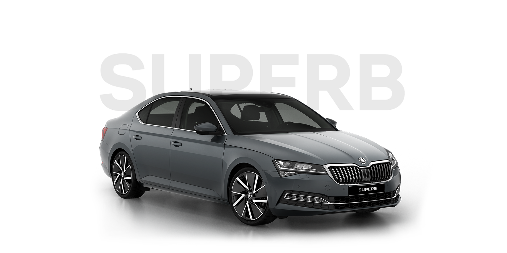

Чешский представительский седан класса D.Автомобиль для делового человка.
 Škoda Superb — чешский лифтбэк/универсал, флагманская модель компании Škoda Auto.
Название современных автомобилей было позаимствовано у линейки автомобилей, производившихся в 1934–1942 годах. В 2007 и 2008 годах в России было продано 785 и 839
автомобилей соответственно. В соответствии с классификацией легковых автомобилей по формальному признаку (габариты), принятой в ЕС, автомобиль принадлежит к сегменту E — «Executive cars»,
по Euro NCAP — к «Large family car» (сегмент D). Неофициальные источники, дилеры и журналисты, специализирующиеся на данной тематике,
относят автомобиль как к D-сегменту, так и к бизнес-классу/Производился на базе Volkswagen Passat 1996 года. Для китайского рынка Volkswagen Passat Lingyu выпускается
с удлинённой на 10 см колёсной базой. Претерпел незначительную модернизацию в 2006 году, в результате которой изменениям подверглись решётка радиатора,
фары и задние фонари, появились новые двигатели и изменился интерьер автомобиля.В 2015 году был показан новый Superb, выполненный в стилистике концепта Vision C,
ранее представленного компанией. Продажи начались в сентябре 2015 года.
Модификация 2.0 AMT
Размеры, мм
Объём и масса
Дебютировавшее этой весной третье поколение Škoda Superb еще раз подтвердило высокий уровень безопасности всех моделей чешской марки:
автомобиль безупречно выдержал краш-тесты по европейскому протоколу EuroNCAP и заработал максимальные «5 звезд». С видеоотчетом об
испытаниях вы можете ознакомиться ниже.Лифтбек на модульной платформе MQB оснащен широким спектром средств активной и пассивной
безопасности. Уже в базовой комплектации присутствует ESC и экстренное торможение, а на большинстве европейских рынков к ним прибавляются
дифференциал XDS+, слежение за давлением в шинах и радар, замеряющий дистанцию до впереди идущих машин.
За дополнительную плату Superb можно оснастить детектором «слепых» зон, адаптивным круиз-контролем, помощником при движении в пробках,
системой слежения за соблюдением ряда движения и даже такими новыми пока функциями, как распознавание дорожных знаков и контроль усталости водителя.
Не относятся напрямую к защите от ДТП, но также повышают безопасность «умные» фары, автоматически переключающиеся на ближний или дальний свет.
В Skoda особо отметили, что после краш-теста нового Superb абсолютно все модели чешской марки имеют пятизвездочный рейтинг безопасности EuroNCAP.
В ближайшее время третье поколение флагмана Skoda будет доступно и в России.